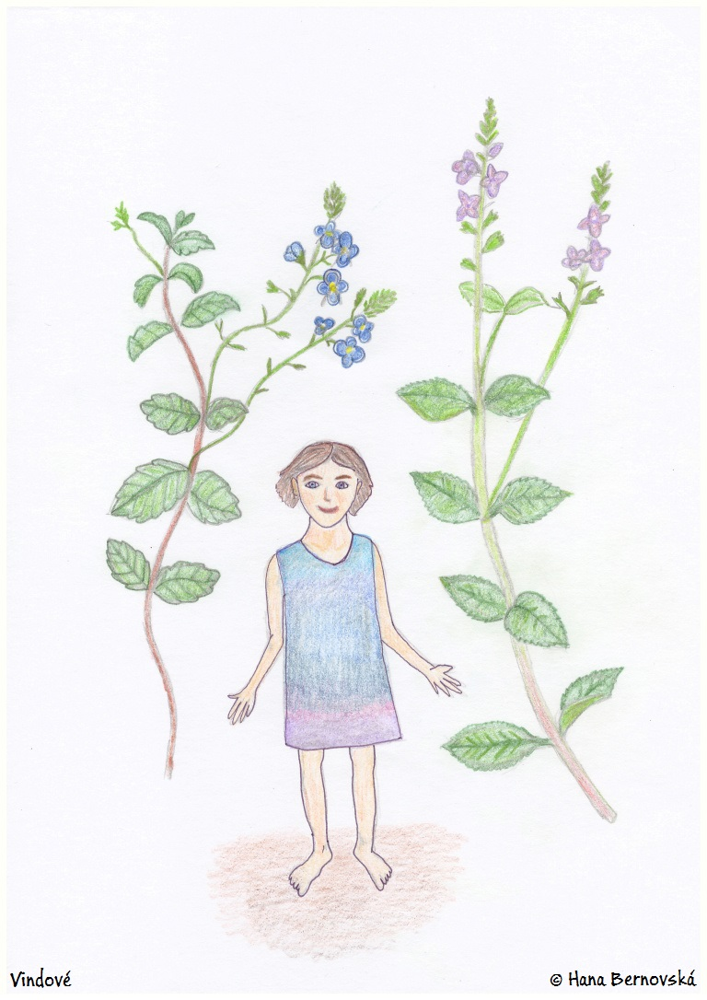
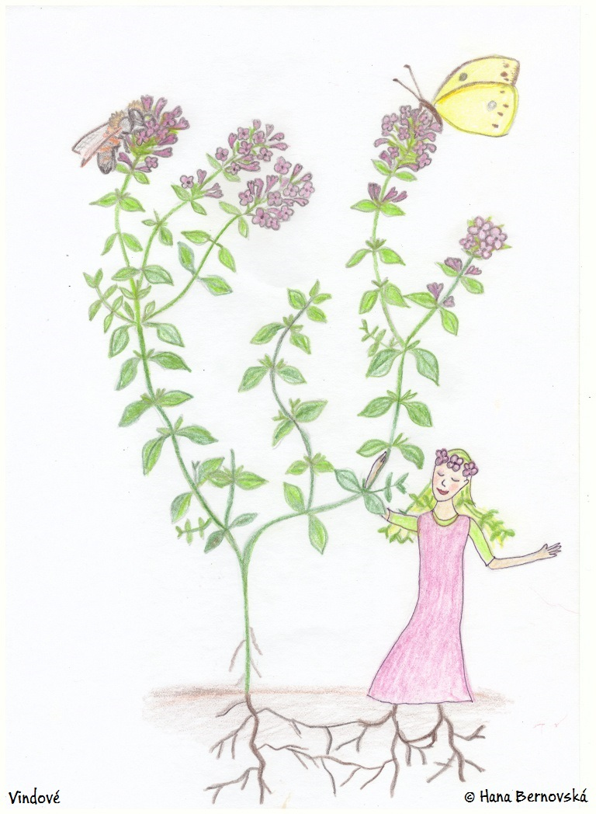
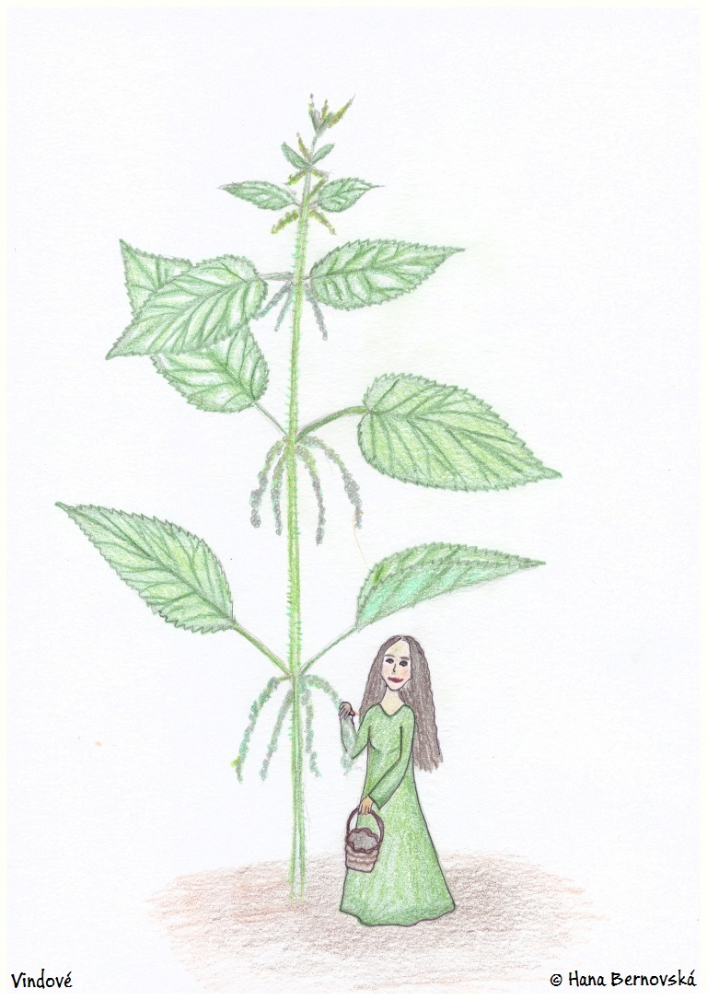

Rostliny, keře a stromy provází člověka už od samých počátků jeho bytí a daly tak v jeho mysli vzniknout mnohým představám s nimi spojenými. To se především týká rostlin, které člověk používal jako jídlo (ať už v neupravené či upravené podobě) nebo které člověka dokázaly léčit a pročišťovat. Takové bylině lidé v dávných dobách, i na mnohých místech v dobách současných, projevovali ohromnou vděčnost a vytvářeli obřady k jejímu uctění. Byliny hrály důležitou roli při výročních slavnostech, ať už to bylo v době letního slunovratu, v době žní, zimního slunovratu či během Velikonoc, kdy především jejich časné zelené výhonky sloužily k pročištění těla po zimě a k doplnění vitamínů. Z bylin se dělaly a dělají léčivé nálevy (čaje), odvary, výluhy (maceráty), koupele, masti, oleje, tinktury, inhalace, obklady, amulety (ochranné přívěšky či „návazy“) a mnohé další věci zahrnující i vykuřování danou rostlinou k pročištění, rychlejšímu uzdravení či použití během lidového obřadu. Lidé snad všech dávných kultur včetně starých Slovanů se na byliny dívali jako na živé bytosti s velikou silou, které je možné poprosit o pomoc. Když se pak provede správný obřad, moc byliny se zesílí a vstoupí do těla člověka spolu s například vypitým nálevem. K léčivým rostlinám měly osobní a díkuplný vztah snad všechny národy, například i staří Římané:
„Úměrně tomu, jak rostlo mé pojednání, rostl i obdiv pro starou dobu, a čím větší množství rostlin mi ještě zbývá, tím vhodnější mi připadá vzdát hold péči dávných lidí ve vyhledávání bylin i jejich laskavosti, s jakou nám vědomosti o nich odkázali. Snad by se mohla zdát překonána štědrost samé Přírody, kdyby ty objevy byly toliko lidským dílem. Nicméně je jasné, že tato věc byla prací bohů, neb alespoň jejich vnuknutím, i když to byl vlastně člověk, kdo objevoval, a že ona, Matka všech tvorů, tyto léčivé rostliny nejen zrodila, ale dala nám i poznat.“ – Naturalis Historia (XXVII. kniha), Plinius starší
Ve sbírce, kterou jsme nazvali „Pocta bylinám“, najdete krátké promluvy k jednotlivým léčivým rostlinám spolu s obrázky k vyvolání představy silné a živé bytosti, kterou každá rostlina podle našich předků a předků mnoha jiných národů je. Samotné promluvy vypadají podobně jako lidová zaříkávání a obsahují i stručné ujasnění toho, k čemu je možné danou bylinku použít. U každé rostliny je kromě českého názvu uveden i název lužickosrbský, latinský a některé české lidové názvy.
Ukázka některých promluv:
Rozrazil rezekvítek, Rozrazil lékařský
Łučny rozraz, Dobry rozraz
Veronica chamaedrys, Veronica officinalis
Bouřka, čistec, přítržné koření, rezekvítek.
Tvá moc mě vždy ohromí,
když modrá kvítka zahrady pokryjí.
Lidé ti i bouřka říkají,
tvé síly jsouc si vědomí.
Kvítka, stonky zelené – vším záříš,
odvahou a důvtipem svět probouzíš!
U Matky Země hledáš přístřeší,
k ní vše živé též náleží.
Krev čistíš, jedy i hleny rozrážíš,
duši klidníš, smělostí ji odíváš,
v různých podobách přicházíš,
paměti i žaludku prospíváš.
Světle modré kvítky tmavnou,
nebesky prosvětlí trávu zelenou,
v lese je tvá síla největší,
růžovější, fialovější.
Na tebe máme pamatovat,
když tělo i duše sténají,
a navždy si připomínat,
že i ti nejmenší sílu mají.

Mateřídouška úzkolistá
Pěskowa babyduška
Thymus serpyllum
Douška mateří, mateřinka, polní tymián, žadovník.
Horký slunečný den už vůni k nám posílá,
kdo se to uprostřed paloučku růžově odívá?
Jsou to malé rostlinky, co tvoří zdravé peřinky!
Dvanáctero neduhů umíš přivézt k rozumu,
znám tě, přec jsi mi tehdy pomohla,
když mně tvá síla vstoupila do těla.
Oheň zahřál Vodu, napil jsem se pak,
v mysli jsem tě viděl, tancovalas tak,
že mě neduh opustil, za hory se vytratil!
Kašel s rýmou mizí, dívky již potíže nemají.
Už víte, děti, o kom je řeč?
Včelky pyl sbírají, přiletěl motýlek,
je to Mateřídouška – léčivý květ!

Kopřiva dvoudomá
Wulka kopřiwa
Urtica dioica
Kopřiva žahavá, prhlavka, pyhlavka, včela rostlinného světa, žahava, žihlavka.
Když se potají jak had,
blíží nocí násilník a vrah,
v podobě kouzel či bolů,
spálíš ho, prach spadne dolů,
do hlubin širokých,
do řek rozlehlých,
do moře velikého,
pryč od domu našeho.
Stále stojíš na stráži,
chráníš tu chaloupku naši,
hloupý pak je ten,
kdo nazývá tě plevelem.
Touhu v srdcích rozpálíš,
dvanáct nemocí hned zničíš,
boly jater, plic i sleziny,
řídké vlasy, plísně, ekzémy,
bolesti i alergie,
všechno zmizí, díky tobě!
Na jaře nám krev čistíš,
v zimě teplo přinášíš,
rostlinná bojovnice,
každý, kdo sní,
se hned do přítomnosti vrátí,
dotkne-li se tě,
nemůžeš pro nás dělat více!
Navždy ať tě chválí ti,
kdo tvoji pomoc poznali,
kdo před tebou úctu mají,
nebojí se už žahnutí.

Básnička vznikla na motivy lidových zvyků sesbíraných Karlem Jaromírem Erbenem.
O půlnoci chodí panny
k třpytící se studánce.
Sbírají tam mnoho bylin,
které mluví o lásce.
Oj, ho, ho – které mluví o lásce!
O půlnoci chodí panny
prosit Měsíc z vrchů skal,
aby jim dal půvab, sílu,
zaplašil tak všechen žal.
Oj, ho, ho – zaplašil tak všechen žal!
O půlnoci chodí panny
do zahrady stromem třást.
Chtějí se ptát na milého,
kouzlem lásky ho pak zmást.
Oj, ho, ho – kouzlem lásky ho pak zmást!
O půlnoci chodí dívky
spolu smát se, povídat,
o kouzlech a nočním snění,
jak mladíky pochytat.
Oj, ho, ho – jak mladíky pochytat!
O půlnoci chodí dívky
lákat chlapce do sítí.
Každý den se chytne jiný,
jejich touhy rozlítí.
Oj, ho, ho – jejich touhy rozlítí!
O půlnoci chodí dívky
do lesů šátečky prát.
Kolik milých měla která,
netřeba se dále ptát.
Oj, ho, ho – netřeba se dále ptát!
Pro více informací klikněte sem: www.vindove.cz/pocta-bylinam